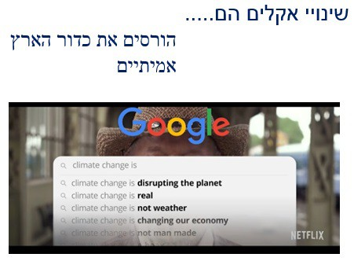

אלגוריתם
אלגוריתם – הסבר בסיסי
האלגוריתם הוא מושג מתחום המתמטיקה והוא **האמצעי שעוקב אחרי כל משתמש ואחרי כל שימוש שנעשה ברשת האינטרנט**. האלגוריתמים השונים **לומדים** את אופן השימוש של כל אחד מאיתנו ועל ידי לימוד זה הם מנבאים את התנהגויות המשתמשים ויכולים לעצב התנהגויות אלו.
האלגוריתם הוא **המכשיר שמנווט כל אחד מאיתנו בתוך הרשתות החברתיות**. הוא קובע את המסלול של כל אחד מאיתנו בתוך ים המידע והאפליקציות.
•
**אפשר לומר שאנחנו, הקהל, משתמשים באלגוריתם, אבל גם האלגוריתם משתמש בנו**.
דוגמאות (גוגל, ווייז, טיקטוק)
• **האלגוריתם של גוגל**
למד את אופני השימוש שלי ברשת: מילים בהן השתמשתי, תוצאות עליהן התעכבתי ועוד, והוא גם יודע נתונים עלי. לפי המידע הזה הוא יוכל לחשב מהן התוצאות הרלוונטיות ביותר לכל חיפוש שאעשה. לכן, אנשים שונים וממקומות שונים, כשיציגו אותה מילה בגוגל יקבלו תוצאות שונות. (אבל הוא גם יוכל להתאים לי תוצאות לפי האינטרסים שלו, של התאגיד הכלכלי או של גופים אחרים)
• **האלגוריתם של ווייז**
למד: מהן הנסיעות הקבועות שלי, היכן הבית שלי ומהן הכתובות אליהן אני נוסע באופן רגיל. הוא למד להתריע בלפני שצפויים פקקים היום בחזרה מהעבודה (הוא גם יודע מי עוד מגיע לאותן כתובות באותן שעות ולכן עם מי אני עובד/נמצא/גר/מבלה. הוא יודע מתי חרגתי מהמסלול הרגיל ועוד).
• **אלגוריתם של טיקטוק/אינסטגרם/פייסבוק**
לומד: על אילו סרטונים מתעכבים יותר זמן, למי ולמה עושים לייק/שיתוף/תגובה וכו'. האלגוריתם לומד את ההעדפות שלנו ואת אופני ההתנהגות של כל אחד ברשת. הוא יוכל להתאים לו תכנים "מתאימים".
• התאמת תכנים = שהמשתמש יראה אותם כ"מתאימים", אבל גם המתאימים לאתר/לתאגיד, שרוצה להרוויח כסף.
דוגמה: תוצאות חיפוש משתנות
בפתיחה מוצג כיצד חיפוש בגוגל משתנה לפי אזורים: כשכותבים בשורת החיפוש "שינויי אקלים הם", מקבלים תוצאות שונות בהתאם למקום המגורים ("מסכנים את כדור הארץ", "הונאה", פוליטיים" ועוד).

**שמו לב**, האלגוריתם בוחר אילו השלמות אוטומטיות לכתוב ואילו תוצאות חיפוש להעלות למקום בולט.
**מה המשמעות של הדוגמה?**
האלגוריתם של גוגל מעצב לאזורים שונים בארה"ב תשובות אחרות והשלמות אוטומטיות אחרות. למעשה, האלגוריתם קובע לאנשים שונים, שמחפשים את אותן המילים, תוצאות אחרות.
**מה השיקולים שמנחים את עיצוב האלגוריתם: מסחריים? פוליטיים? חברתיים?** כזכור, איש לא יודע מה השיקולים וכיצד זה מעוצב וחמור יותר, איש לא מפקח על תהליכים אלו.
סיכום
**האלגוריתם – בשרות גוגל ומנהליו – יכול להטות את התוצאות לתועלתו המסחרית, לטובת שחקנים אחרים בעלי כוח כלכלי או פוליטי - - וכל זה מבלי שנדע**.
נקודות חשובות לזכור
- האלגוריתם של כל חברה (**גוגל, פייסבוק, אינסטגרם, וואטסאפ** וכו') סודי ורק מעט ממפתחיו מכירים אותו (כלומר, לא יודעים כיצד הוא פועל ומה השיקולים שלו ומתי עובר שינויים.
- האלגוריתם פועל **משיקולים מסחריים**: מטרתו להשאיר כמה שיותר משתמשים למשך כמה שיותר זמן. מטרתו היא לרצות את המפרסמים שמממנים את האתרים/אפליקציות (שניתנים חינם למשתמשים).
- **אין פיקוח** על האלגוריתם, אין גוף ממשלתי או ממסדי שבודק את אופן הפעולה של האלגוריתם (בניגוד, למשל, לגופים שמפקחים על שידורי טלוויזיה).
**לכן, חשוב לדעת:** התוצאות חיפוש או מסלולי ווייז וכו', שמוצגים לנו, אינם ניטרליים ולא מכוונים רק לטובתנו, אלא **לטובת האתר**, התאגיד הכלכלי. (ואולי הוא מכוון לטובת גופים חזקים – כלכליים או פוליטיים – ששילמו לאתר כדי שיציג תוצאות שיתאימו להם).
השלכות נוספות – הומוגניות והקצנה
יציקת קבוצות הומוגניות – אנשים בעלי מאפיינים דומים או הרגלי גלישה דומים, יקבלו על ידי האלגוריתם את אותו סדר יום, אותן המלצות גלישה, אותן תוצאות בגוגל וכן הלאה. **יווצרו** קבוצות של אנשים "דומים זה לזה" ⮞ הפוך מפלורליזם, הטרוגניות, חשיפה למגוון אנשים ומגוון דעות.
הקצנה – האלגוריתם רוצה להשאיר אותנו באתר ולא לשעמם. לכן הוא יציג לנו כל הזמן תוצאות שהולכות ומקצינות ויש חשש שהאלגוריתם יגרום להקצנה (בעמדות, בדעות, בהתנהגות).
אלגוריתם וספירלת השתיקה
**"ספירלת השתיקה"** – כזכור, המושג טוען כי אנשים, כיצורים חברתיים, בוחנים מהן העמדות בחברה. אנשים שעמדתם דומה לעמדה שנתפשת כדעה השלטת נוטים יותר להביע דעתם בפומבי ובאופן כזה, הדעה נתפשת עוד יותר כדעת הרוב. לעומתם, אנשים שמחזיקים בעמדה שנתפשת במיעוט, נוטים פחות להביע דעתם באופן כזה שהדעה נתפשת עוד יותר כמיעוט.
**השפעת האלגוריתם:** אלגוריתם יכול להבליט עמדה מסוימת (פוליטית או מסחרית או תרבותית). העמדה הזו תופיע ברשתות החברתיות ובאינטרנט כדומיננטית, כבולטת וכשייכת לרוב. זה יעודד אנשים שחושבים באופן דומה ויחליש אנשים שחושבים באופן נוגד מלהביע דעתם. **בכך אלגוריתם יכול לעצב את דעת הקהל**.
**חופש ביטוי, מרחב ציבורי** – כשהמרחב הציבורי עובר לאינטרנט והאלגוריתמים מעצבים ומנווטים אותנו ברשת האינטרנט, יש למעצבים של האלגוריתם אפשרות לעצב את **השיח הציבורי**, את **המרחב הציבורי**. להדגיש קולות מסוימים ולהחליש אחרים. במצב כזה, כיצד ניתן לאפשר **חופש ביטוי** או **פלורליזם** של עמדות ודעות באופן חופשי?
הרחבת המושג – ה"מאסטר אלגוריתם"
צפו בפרומו ל"מסכי עשן: המלכודת הדיגיטלית" (נטפליקס)
הצפייה בתכנית (המומלצת מאוד) ממחישה כיצד האלגוריתמים מנבאים התנהגות ומשרתים אינטרסים מסחריים ופוליטיים.

חלקים מטור של ד"ר יובל דרור מעיתון "הארץ"
החיפוש אחר ה"מאסטר אלגוריתם" המושלם: "החיים שלנו נשלטים על ידי אלגוריתמים... המחיר שנלווה לכך הוא עצום."
שאלות לתרגול
- הסבירו מהו אלגוריתם ומה תפקידו ברשת האינטרנט.
- הציגו דוגמאות מקטע הקריאה לשימושים שאנחנו עושים באלגוריתם.
- הציגו דוגמאות קטע הקריאה והסבירו כיצד האלגוריתמים "משתמשים בנו".
שאלות דילמה:
בסיום הקטע מזכיר הכותב כי לשימוש הנוח באלגוריתמים נלווה מחיר עצום.
- הציגו כמה יתרונות של המרכזיות של אלגוריתם בחיינו והציגו דוגמאות למחירים שיתכן ונשלם.
- הציעו דרכים להתמודד מולו והסבירו מה היתרונות ומה המחירים שבכל דרך.